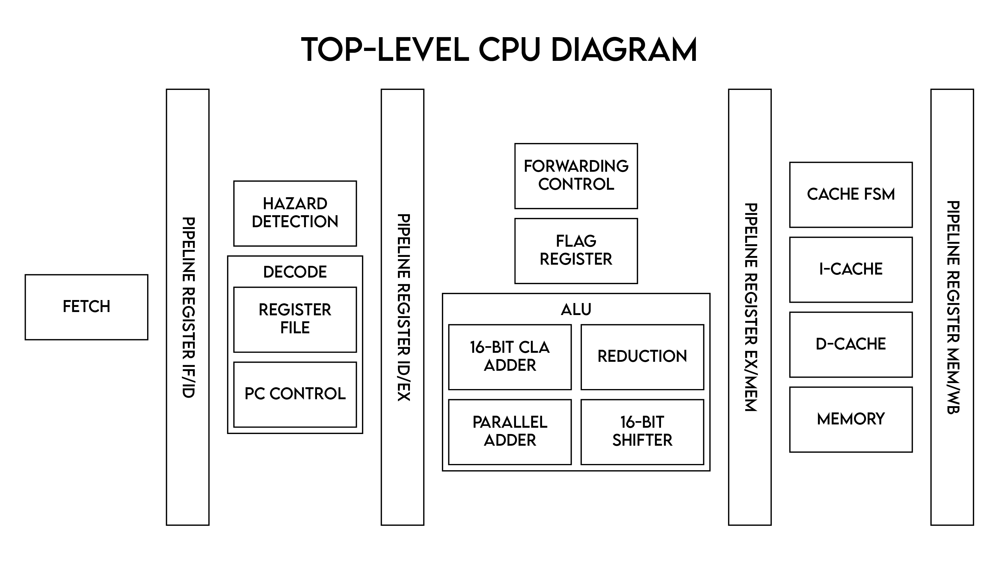
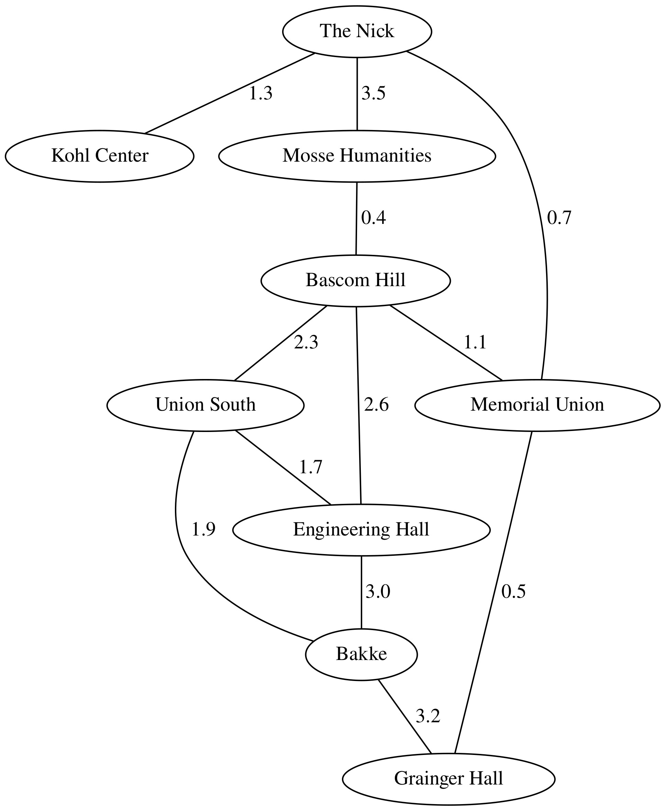
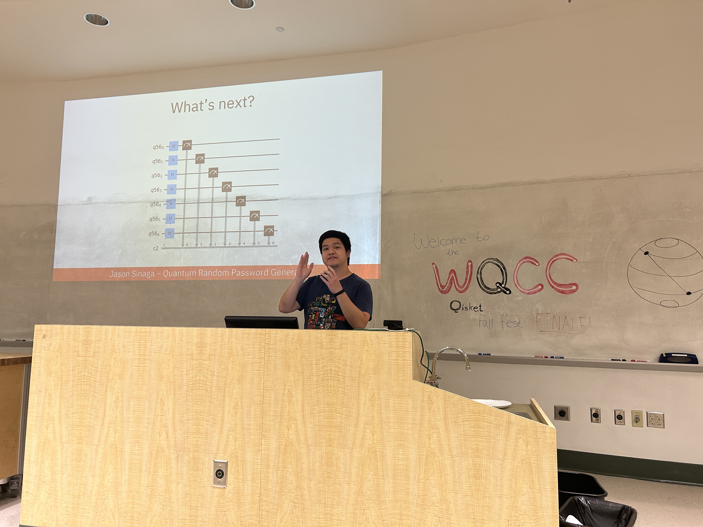
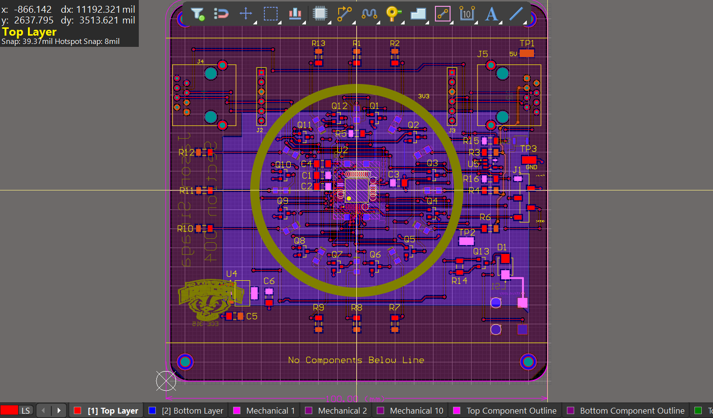
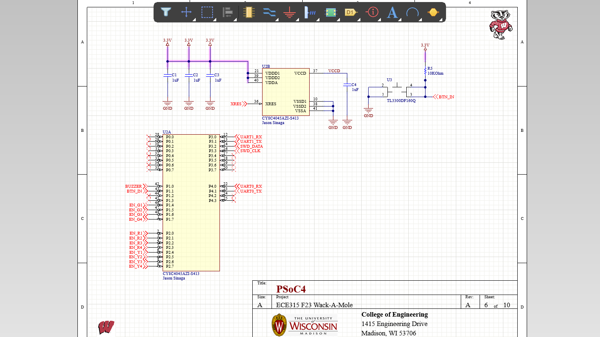
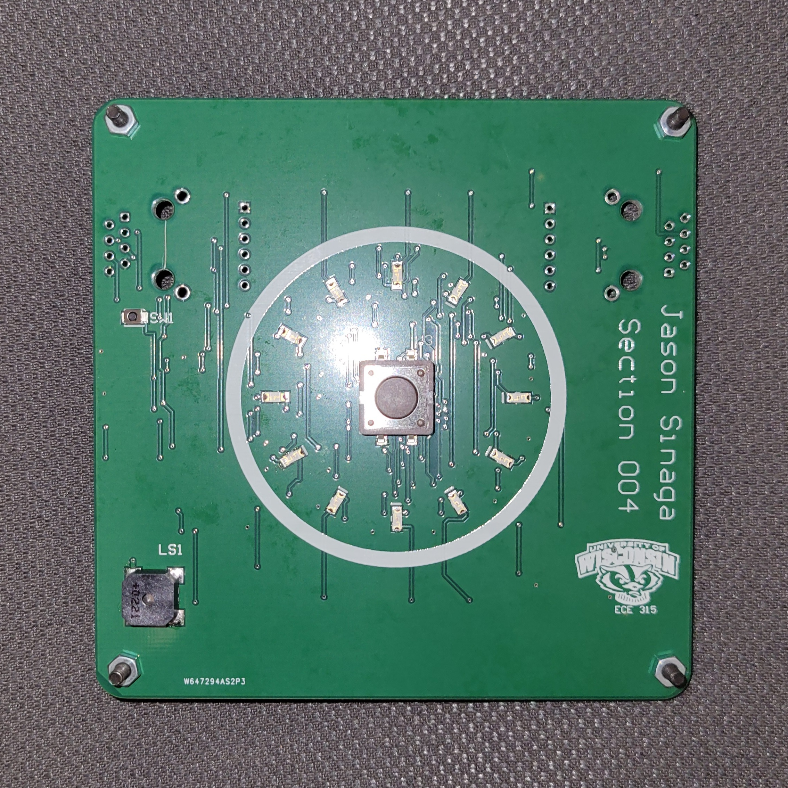
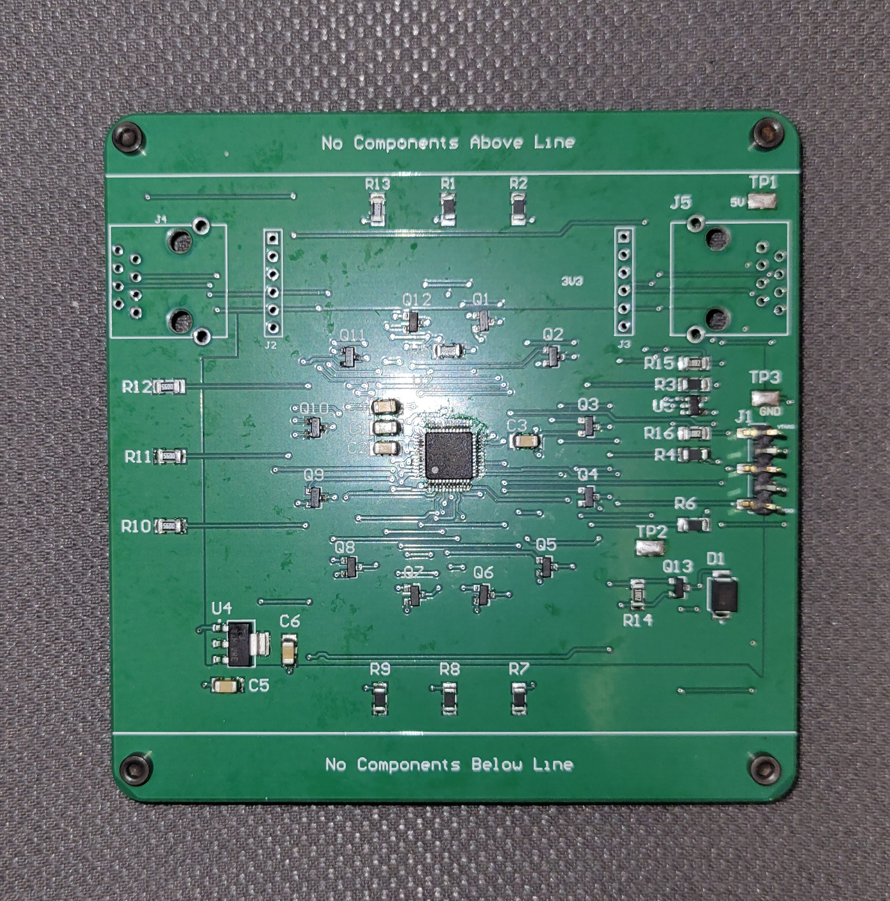

Teaching
STEM Head Tutor
Worked as a head tutor for UW-Madison's Undergraduate Learning Center. Tutored students
in group and private settings and ensured the smooth operation of nightly tutoring activity. Subjects tutored:
Computer Science
Electrical and Computer Engineering
Signals
General Physics I and II
General Chemistry I
Calculus I, II, III
In-Class Peer Coach for ECE 203 (Signals, Information, & Computation)
Worked as an In-Class Peer Coach together with Professor Scott Greene in Spring of 2023 and with Professor Feng Ye in Fall of 2023 to assist students in answering
in-class exercises and writing MATLAB code. The concepts introduced in class included:
Aliasing, AM Modulation, LTI filters, Convolution, Frequency Response, DFT, MATLAB
In-Class Peer Coach for ECE 376 (Electrical and Electronic Circuits)
Worked as an In-Class Peer Coach together with Professor Joseph Andrews in Spring of 2024 to assist students in in answering in-class exercises. The topics included:
Ohm's Law, Kirchoff's Law, Thevenin and Norton equivalent circuits, opamps, capacitors and inductors in first-order circuits, sinusoidal steady state, phasors, complex power, transformers
English Teacher
Taught English to elementary students part time for one year and full time for six weeks. the basics of reading and phonetics,
in addition to writing, speaking, and listening. Responsibilities included:
Creating lesson plans and summaries
Tracking student progress
Communicated with parents regarding student growth
Discussed teaching strategies with colleagues and managers
SystemVerilog
Segway
In a group of 3 and under the guidance of Professor Eric Hoffman, we developed a Segway. He instructed us in SystemVerilog and guided us in synthesis with Synopsys. We utilized Quartus to map it to a DE0-Nano. We developed modules for SPI, UART, Piezo, Integrator, A2D interface, and other minor components. Additionally, we tested these modules in ModelSim and ensured that they met timing and size requirements.
Multi-cycle Pipelined CPU
In a group of 3 and under the guidance of Professor Joshua San Miguel, we developed a CPU that uses a custom ISA that takes in 16-bit instructions similar to the MIPS ISA. The instructions supported include arithmetic operations, memory instructions, and branches. We developed modules for the ALU, Forwarding Control, Register File, Pipeline Registers, and Control units. Testbenches were made for smaller modules and register values were traced from the testbench.

Notable skills: Synthesis, Testing, Finite State Machines
Java
UW Student Database
In a group of 4, we implemented an application that allows users to access a database of students with a Red Black Binary Tree implementation. The application allowed for importing, adding, removing, and searching UW Madison students based on their ID number. The data assocciated with each student are their names, majors, and years.
Reddit Post Search Engine
In a group of 4, we implemented a search engine for Reddit posts by using a hashtable. We used Linear Probing and Linked Lists for collision handling when storing posts based on their words in their titles and body. Users can search for these posts by typing in the relevant key words. Users can also import reddit posts to store into the search engine.
Subway Navigator App
Implemented an app with JavaFX that implemented Dijkstra's Algorithm to find the shortest path between two subway stations on Linux. Users can write down the starting point of their journey and their end point. They will receive information on the stations they would need to pass by and also the associated cost. Furthermore, users can also receive the map's Prim's Algorithm representation.

Notable skills: Git, Red Black Tree, Hashtables, Djikstra's Algorithm, Linux, Makefile
C
Key Hunter
Created a game with Tim R. Wang called Key Hunter. Used an MSP432P401R Launchpad and Development Kit that employed the joystick, buttons, accelerometer, light sensor, speaker, and LCD Display. The goal of the game is for the player to acquire all keys in each level. More levels will be unlocked as more levels are completed by the player. However, they need to avoid protruding spikes and patrolling enemies that can hurt the player.
Heap Allocator
Created a program that simulated memory allocation following the IA-32 architecture. Header and Footer blocks were incorporated and immediate splitting was done during memory allocation. Memory block coalescing was user-initiated.
Notable skills: Level Design, Character Design, Enemy Programming, Animation
Linux Shell
Created a shell that runs on the Linux terminal. The shell can store local and environment variables, piping, and run parent and child processes.
Python
Cashier App
Created a GUI-based application that acts as an advanced cash register that uses the libraries openpyxl, xlsxwriter, and customtkinter. The app reads an excel file that loads the inventory. From the app, the user can add items, put items in the shopping cart and sell them, and generate a new excel report with the new inventory count. You can look at it here.
Quantum Password Generator
Participated in the Wisconsin Quantum Computing Club Quantum Hackathon. Utilized Qiskit to complete several notebooks on quantum circuits and made a Random Password Generator using a quantum circuit with multiple Hadamard gates. Certificate can be found here.

LaTeX
Intro to LaTeX handout
Created a handout that teaches beginners important notes about LaTeX for making mathematical documents (particularly for discrete math courses). A target file is also provided to practice using LaTeX with the goal of replicating it. You can access the handout and the target file here.
Undergraduate Research
Laboratory for Computing with Unconventional Technologies
Conducted research under Professor Akhilesh Jaiswal in the COMPUTE lab (Spring & Fall 2024) on reengineering a CMOS circuit that can detect Object Motion Sensitivity. In the new design, reconfigurablity was introduced and the circuit was simulated using Cadence Virtuoso. Our paper was accepted by the International Conference of Neuromorphic Systems 2024 and can be accessed here.
Energy Transport & Conversion Laboratory
Conducted research under Professor Eric Tervo in the ETC Lab (Fall 2024) to incorporate previosuly researched on solar cells to model to the Solcore codebase to model the properties of a new PV cell.
PCB Design and Assembly
Printed Game Board
Designed a PCB together with its schematics on Altium. Connected the ports through orthogonal routing. PCB was then printed and then assembled the PCB with all its components. The components included the MCU, capacitors, resistors, LEDs, switches, and MOSFETs. The PCB is programmed for players to attempt to press the button when the green LEDs are on. If successful, the player will continue to the next round but the LEDs will light up faster.




USB Equalizer
Designed the schematic of a USB equalizer and its PCB layout using EasyEDA. Assembled Professor Giri Venkataramanan's PCB design and its components. The components included op amps, capacitors, resistors, potentionmeters, and audio jacks. Used a reflow oven and soldering iron to place the components onto the PCB.